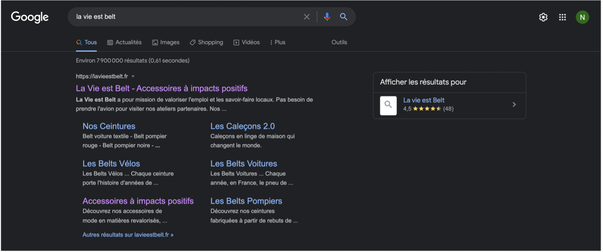
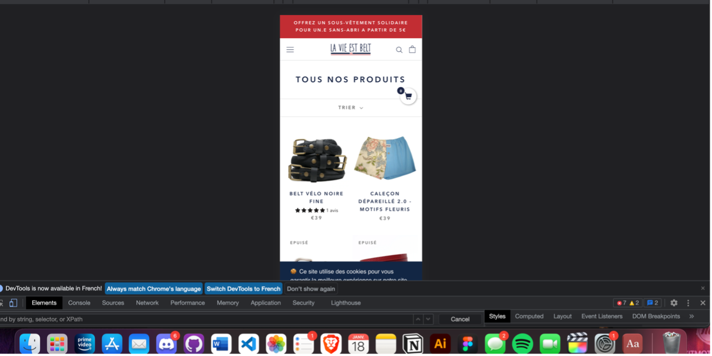
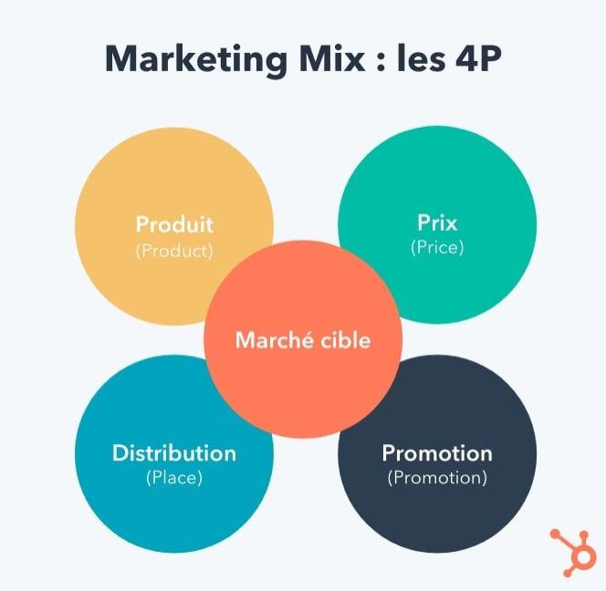

SAE 101
Audit
- Comprendre
SAE 104
Audio-Visuel
- Exprimer
SAE 202
The Man From Earth
- Concevoir
- Exprimer
- Développer
- Entreprendre
SAE 101 - Audit
La Vie Est Belt
Compétences :
- Comprendre
1. Ergonomie et Accessibilité
Le site apparait en premier quand on le recherche sur internet.

Figure 1: Page de recherche google
La balise « title » contient « La Vie est Belt - Accessoires à impacts positifs » Et la balise Meta Description contient « La vie est belt a pour mission de valoriser l'emploi et les savoir-faire locaux. Pas besoin de prendre l'avion pour visiter nos ateliers partenaires. Nos... » Aucuns MetaKeyWord ne sont renseignés, en recherchant des ceintures ou des caleçons le site n’est pas sur les 5 premières pages de recherches. Le site n’est pas bien référencé. Le site possède une version mobile.

Figure 2: Capture d'écran de la version mobile du site
Le rendu visuel est plutôt satisfaisant, aucuns bugs à signaler. Le bandeau de réduction est toujours là. Les éléments principaux sont là, on peut voir les produits, le nom du site, on a accès au menu, notre panier, et on peut faire une recherche. Oui le site est intuitif, c’est le même Template que la plupart des sites de vente en ligne, on ne s’y perd pas. Le site est interactif, on peut remarquer des animations sur la plupart des éléments. Je trouve que le site est assez bien structuré. On peut retrouver sur le site des outils de conversion tels que : Inscription au site, inscription à la newsletter.
2. Analyse de marché
Le marché du vêtement d’occasion représente à ce jour plus d’un milliard d’euros selon l’IFM (Institut français de la mode). Comparé aux 50 milliards de l’industrie de la mode, c’est certes peu important encore, mais ce marché n’a cessé de se développer ces dernières années. Il est d’ailleurs en pleine structuration avec des entreprises à fort succès comme Vinted, la licorne lituanienne qui compte 30 millions de membres en Europe, mais aussi des sites comme Le Bon Coin ou Vestiaire Collective.
Comme sur d’autres marchés, « la pandémie a largement accéléré la croissance de l’e-commerce dans l’habillement, dont la part a quasiment doublé, de 10 % à 20 % » selon un article du journal Les Echos. Le secteur de l’habillement est encore à la traîne en termes de digitalisation. Néanmoins, plusieurs enseignes prévoient de combler leur retard en développant ce canal et en réduisant largement leur parc de magasin. Zara a par exemple annoncé au milieu de l’année 2020 la fermeture de plus de 1 000 magasins.
L’industrie textile change de paradigme : désormais, c’est la qualité qui semble primer sur la quantité, mettant à mal le concept de «fast fashion»qui dominait le marché ces dernières décennies. Enoutre, la réduction de l’empreinte écologique des productions textiles est devenue un élément incontournable, autant pour la planète que pour la rentabilité des entreprises. L’essor de la consommation de vêtements par habitant a un coût : l’industrie génère à l’échelle mondiale environ 10 % de toutes les émissions de gaz à effet de serre. De plus, une baisse de 10 % des importations françaises et des importations allemandes de vêtements représenterait, si elles étaient compensées par une production locale, une augmentation de 8 % du chiffre d’affaires de la fabrication européenne de vêtements. Les relocalisations sont donc dans les petits papiers.
Les modes de consommation ont évolué avec le digital et le mobile est devenu un point central de communication pour fidéliser les clients. Cette fidélisation est devenue un levier de croissance majeur pour les marques. Aujourd’hui, le client fidèle n’est pas seulement le meilleur acheteur.
Avec des données échangées en temps réel et des comportements d’achat très contrastés, sur de multiples canaux, tout client est en fait un client fidèle mais selon des critères différents. L’enjeu de cette nouvelle ère de la fidélisation est donc la considération de toutes les interactions avec le client, peu importe leur nature, et l’identification de l’ensemble des clients comme des clients fidèles dans le but de leur proposer une expérience unique en fonction de leurs intérêts.
3. Analyse PESTEL
-
- Politique :
La loi PACTE a pour but d’inciter les entreprises à l’innovation écoresponsable permettant sur le long terme d’arriver à une économie plus saine, plus respectueuse de la planète. En contrepartie, si l’on vise l’écoresponsabilité, et la non-délocalisation les produits vont être plus chers à fabriquer donc plus chers à la vente.
-
- Économique :
La France est très bien placée au niveau mondial, dans les 15 premiers pays.
La vie est belt est impacté par le commerce mondial, il fait face à des géants comme Amazon qui propose un service de livraison très rapide, des prix biens plus bas et un choix bien plus large.
-
- Sociologique :
La France est un pays résolument moderne, qui rattrape peu à peu son retard sur certains autres pays. En effet, les nouvelles technologiesprennent une grande place dans la vie des consommateurs, et cette place sera amenée à croître encore davantage dans les années à venir.
La France est un pays célèbre et le français est d'ailleurs la deuxième langue la plus apprise au monde derrière l'anglais.
Le niveau de vie des Français est relativement élevé, mais le taux de chômage également. Les inégalités se creusent entre ceux qui ont un fort pouvoir d'achat et ceux qui doivent se contenter des aides ou autres pour survivre. Il s'agit d'un fait qui se retrouve d'ailleurs dans un grand nombre de pays, mais qui s'est accentué avec la crise sanitaire.
Les gens commencent à être attirés par le made in France, surtout les gens aisés, pouvant s’acheter ces produits. De plus on parle ici de production française, ce qui veut dire que les employés sont français et ont de bonnes conditions de travail.
Des gens en réinsertion sociale et des handicapés sont également employés dans l’entreprise la vie est belt.
-
- Technologique :
La France est un pays de plus en plus avancé au niveau technologique. Le commerce électronique a pris peu à peu une place primordiale dans la vie des consommateurs français.
Dans chaque domaine d'activité, les innovations sont un vecteur de réussite et permettent de générer des parts de marchés aux entreprises. Les innovations et le dynamisme permettent également de contrer une concurrence qui est de plus en plus présente au fil des ans.
De plus la technologie peut se trouver dans les produits vendus. La vie est belt présentes des produits comprenant de la technologie. Les matériaux utilisés sont faits à base d’objets recyclés (pneus, lances à incendie, cordes d’escalades, etc).
-
- Écologique :
La France est très concernée par la question écologique. Avec plus de 90 millions de touristes chaque année, l'impact environnemental est très important et ne doit pas être pris à la légère. En effet, les nombreuses infrastructures et autres équipements ainsi que les transports représentent un véritable danger pour le pays sur le long terme.
La marque est clairement implantée dans l’écologie, tous ses produits sont écoresponsables, ils sont fait à partir de matériaux recyclés. Cela favorise clairement l’écologie.
-
- Légal :
Tout employeur d'au moins 20 salariés doit employer des personnes en situation de handicap dans une proportion de 6 % de l'effectif total. L'obligation d'emploi concerne tous les salariés quelle que soit la nature de leur contrat. L'employeur doit déclarer chaque année le nombre d'emplois occupés par un travail handicapé pour justifier qu'il respecte son obligation d'emploi. Si l'employeur ne respecte pas son obligation d'emploi, il doit verser une contribution annuelle.
En prenant cela en considération, l’entreprise La vie est belt respecte largement la loi d’obligation d’emploi de personnes en situation de handicap.
4. Public ciblé
Le public ciblé est la haute classe moyenne voir la classe supérieure. Ces produits sont faits pour ces cercles de personnes assez aisés se pouvant se permettre d’acheter plus chers et made in France. Cela concerne les gens vivant dans les grandes villes très polluées mais qui veulent avoir u n impact éco-responsable.
5. Marketing mix

Figure 3
De manière générale, le mix marketing va s'articuler autour de quatre principales composantes :
- - La politique produit (Product)
- - La politique de prix (Price)
- - La politique de communication (Promotion)
- - La politique de distribution (Place)
Chacune d'elle correspond à un des 4P du marketing en anglais : Product, Price, Promotion, Place.
-
- La politique produit :
La politique produit de la marque consiste à vendre des produits conçus à base de matériaux recyclés et produits en France.
-
- La politique de prix :
Étant donné la fabrication localisée en France et non délocalisée comme la plus part des producteurs de vêtements les produits sont vendus plus chers car les coûts de production sont beaucoup plus élevés que si ces ceintures étaient produits en Chine ou à Taiwan.
-
- La politique de communication :
D’après la méthode d’analyse SONCAS (Sécurité, Orgueil, Nouveauté, Confort, Argent et sympathie)
La vie est belt s’axe sur l’Orgueil et la Sympathie dans le sens où ils proposent quelque chose qui devrait « sauver la planète » et nous amène à penser qu’on fait un geste très responsable. Leur marketing mix s’inscrit aussi dans la nouveauté car ils ne transforment pas les matériaux récupérés ils les utilisent tels quels.
A contrario, les aspects Sécurité et Confort ne sont pas favorisés, c’est dommage parce qu’avec des prix plus élevés que la moyenne le client aurait besoin d’être rassuré quand à la qualité des produits. L'argent lui n’est pas un axe de leur marketing mix du tout, ils ne proposent pas des prix compétitifs.
-
- La politique de distribution :
La plupart se passe sur internet, malgré ça une partie de leur vente est liée à la visibilité amenée par des boutiques partenaires.
6. Conclusion
La vie est belt est arrivé sur le marché avec de bonnes idées mais pas forcément les moyens de les rendre compétitives. Ils s’auto-sabotent en ne s’occupant pas du référencement de leur site et comme toutes les autres marques françaises qui produisent en France, leur prix sont trop élevés.
La politique de la marque est clairement axée sur le social, ils emploient des gens en réinsertion sociale et en situation de handicap. ils appuyent sur le fait que acheter la vie est belt c’est faire un gros geste pour la planète.
SAE 104
Audio-Visuel
Compétences :
- Exprimer
SAE 202
The Man from Hearth
Compétences :
- Concevoir
- Exprimer
- Développer
- Entreprendre
Les travaux demandés pour le semestre deux reposent sur une Unité d’Enseignement 202 Concevoir un produit ou service et sa communication qui se sectionnent en trois parties. La première est la stratégie de communication avec l’élaboration d’un plan de communication, la seconde avec la création des éléments graphiques accompagnant la communication à destination du public ciblé et enfin la création et la réalisation d’un court-métrage sur le thème de l’immortalité.
Nous verrons alors avec les trois parties correspondantes ce que nous avons réalisé et enfin en dernière partie la répartition du travail.
1. Notre stratégie de communication sous le signe du mystère
A. La bande annonce de The Man from Earth
Les thèmes mis en avant sont le questionnement et le dialogue (appuyés parla musique).La structure montre les différents personnages du film entrecoupés d’indications sur le film du film sur fond noir toujours avec une voix off qui développe l’intrigue.
B. Autres bandes-annonce pour des films de même catégorie et/ou genre et/ou registre
Pour 12 hommes en colère, l’intrigue est directement dévoilée et les enjeux auxquels les hommes vont devoir faire face (sur les douze un n’est pas d’accord) sont présentés. On comprend alors tout de suite le thème du film et là où il va nous emmener (tous vont alors réagir mais aussi leur présenter leurs arguments sur le jeune garçon). Le trailer pose les informations essentielles (qui, quoi...), et amène doucement le sujet (on entend des arguments sur le petit garçon). La musique est omniprésente et les différents angles de caméra mis dans la bande-annonce renforcent l’idée d’échange, de concertation mais aussi de confrontation.
Durant les premières secondes du trailer de Festen, l’ambiance est plutôt bonne (on voit de courtes vidéos de mariage, de rire, et de sourire).Puis scènes après scènes, ces dernières deviennent plus violentes (notamment avec des scènes de pause cigarette,cris,claque) on peut même penser que le personnage principal décède. Ce contraste entre les deux ambiances provoque chez le spectateur un sentiment de malaise qui doit être volontaire. Une musique de mariage est tout le long du trailer qui dévoile petit à petit les éléments clefs du film et peut être même la fin.
Les thèmes mis en avant sont la révélation, la famille et les secrets.
Un air de famille est ponctué de « si vous aimez... » avec la famille, les animaux et d’autres éléments. On peut penser que le trailer annonce les éléments du film auxquels on peut s’identifier et/où qui peuvent nous donner envie de voir le film.
Mais à la fin du trailer, la même voix nous dit “alors ne venez pas” ce qui vient marquer cette bande-annonce et casser l’ambiance du trailer. La même voix nous dit “pour les autres, un air de famille”, ce qui insinues qu’il faut ne pas apprécier les éléments cités pour venir voir le film. Le visionnaire de la bande-annonce est alors surpris de cette dernière phrase et peut alors être intrigué de ce qu’il “devrait” aimer pour voir le film.
Le trailer de Dark shadow montre le personnage principal en expliquant son histoire, sous l’angle de l’humour dans une première partie (en tournant en dérision les clichés des films d’horreur) puis le fait qu’il soit un vampire venant d’une autre époque. Un sentiment de feel good se dégage (avec la musique de jazz, les scènes de danse notamment).
C. Les différents biais utilisés pour les bandes-annonces citées
La première partie utilise plutôt le biais cognitif (avec les questions et les réponses, les fondus au noir), le spectateur est en mesure de comprendre les informations essentielles. La seconde partie s’appuie plutôt sur la dimension affective avec par exemple la question « qui crois-tu que je sois ? »,la réponse énervée de son ami ou la scène du pistolet qui surprend le spectateur voire le choque.
Les deux dimensions sont utilisées, on peut peut-être penser que le troisième biais poussera les gens à aller découvrir ce film.
C’est une structure complètement différente du trailer de 12 hommes en colère qui lui utilise seulement le biais cognitif (dès les premières secondes, on comprend les personnages et l’importance de leur présence).Tout au long du trailer, ces derniers parlent de ce qui contribue à susciter la curiosité du spectateur (même s’il y a une scène qui utilise le biais affectif, celle avec la « bataille au couteau »).
A l’opposé la structure de la bande-annonce de Festen, avec la violence ambiante qui s’en dégage (qui provient de la dimension affective).Les scènes deviennent de plus en plus violentes et dangereuses suggérant peut-être la mort du personnage principal. Les scènes de dialogues peinent à nous expliquer l’histoire et son intrigue.
D. Le message que nous voulons transmettre
Pour promouvoir The Man From Earth, nous essayerons d’installer le thème du mystère. Nous trouvons intéressant d’exploiter ce thème car il est déjà intrinsèque au film (nous avons la vérité sur l’immortalité de John à la fin du film) mais aussi car il permet de tenir en haleine l’utilisateur ou le spectateur. Même si notre premier axe reste d’informer l’utilisateur sur les enjeux et péripéties du film, nous voulons développer des outils qui amènent l’utilisateur à revenir sur ces derniers une fois le film visionné, de façon qu’il découvre des images ou messages cachés. Les différentes publications sur les réseaux sociaux permettent aux abonnés de se renseigner sur le film tout en suivant un jeu de piste qui peut être découvert ou non par ces derniers.
E. Notre cible principale et élargie
Notre cible globale est les passionnés de science fiction/fantastique et de film d’auteur et regroupe les 35-65 ans. En effet selon Statista, les films de science-fiction/fantastique est le troisième type de film préféré selon les Français en 2016 qu’ils aient entre 16-34 ans ou 35-65 ans.
Figure 1 : Graphiques des films préférés des Français en 2019 selon Statista
Pour le public cible du film, nous pensons que les enfants et les adolescents ne sont pas les cibles prioritaires. Cette dernière comprend des jeunes adultes et adultes dans la catégorie 18-35 ans qui sont plus susceptibles de regarder le film (au vus du rythme, des sujets de réflexion et de la mise en scène).
F. Notre communication
Le film n’ayant pas une communauté de fans déjà crée (ce n’est pas la suite d’un film connu ou une trilogie) nous devons avec la boite de distribution communiquer sur The Man From Earth. Cette communication de notre part et de cette dernière permettra de mettre en avant le film avec la notoriété de ce premier et nous-même par la même occasion.
Ces publications nous permettrons d’agrandir notre communauté et donc de pouvoir communiquer sur un plus grand nombre de personnes sur le film.
Avec les données précédentes, nous avons décidé de choisir de communiquer sur les réseaux-sociaux suivants: Instagram, Facebook et Twitter.
Selon Digimon, les deux réseaux sociaux préférés des 18-30 ans sont Instagram et Facebook.
Figure 2 : Etude de Digimind concernant les réseaux sociaux Instagram, Facebook et Twitter
En janvier 2019, 1/3 des utilisateurs de Facebook avait entre 25 et 34 ans, et un peu moins d’un autre tiers était composé des 18-24 ans selon Digimind. Quant à lui, Instagram comprend 15% des 18-24 ans (hommes et femmes confondus) et 10,2% des 25-34 ans soit les deux plus importantes catégories d’utilisateurs de la plateforme selon JournalduMonde.fr. Ces indications confirment alors notre stratégie de communication sur ces réseaux sociaux.
Toujours dans un but de promotion du film, nous révélerons deux bande-annonce. Une première qui ne révéla pas le secret de John et qui est plutôt courte et une seconde qui est complémentaire. Ce choix permettra d'entretenir l’envie du spectateur de voir le film. La première sera révélée mi-mai, au début de la promotion du film pour plus en dévoiler davantage. La seconde aura un but de rappel en plus de scènes sur le film, qui pourra avoir un effet de continuité pour ce dernier.
Figure 3 : Les principales motivations d’écoute de la radio en 2012/2013 selon Médiamétrie.
Nous avons aussi afin de mieux cibler notre cible élargie de créer un spot radio. Ce dernier nous permet d’étendre notre stratégie en dehors du cadre digital mais aussi de toucher une cible plus large. Selon Médiamétrie, un Français sur cinq écoute la radio pour se renseigner concernant le divertissement et plus généralement la culture.
Enfin notre dernier élément sera un article qui sera publié sur un site spécialisé à destination des fans de cinéma et/où d’actualité. Notre deuxième outil hors réseaux sociaux est un article présentant le film. Ce dernier sera disponible sur des sites spécialisés afin de cibler directement notre cible directe. Enfin le spectateur pourra, une fois le film vu, acheter des goodies à l'effigie du film. Ces derniers pourront pour le spectateur de porter et ou avoir un objet qui lui rappelle le bon moment passé à le regarder mais aussi permettre indirectement de promouvoir le film.
Afin de mieux comprendre notre cible prioritaire, nous avons imaginé deux personas.
Notre premier personna est Chloé une femme de 23 ans, passionnée par les jeux de rôle et la philosophie. Elle est calme et créative, elle aime passer du temps seule quand elle lit où elle peint. Elle fait des études d’histoire. Elle attend du film qu’il la divertisse mais aussi qu’elle le pousse à réfléchir à d’autre point de vue voire qu’elle lui fasse changer de vision. Une des raisons qui la pousse à voir The Man From Earth est (en dehors des points évoqués) est l’ambiance cosy et le mystérieux personnage de John.
Notre second personna est Paul, il a quarante ans et est cadre. Il aime les films d’auteur et la littérature anglaise. Quand il a du temps libre, il se documente sur l’anthropologie et les théories sur Internet. Ces attentes concernant le film sont de passer un bon moment, mais également de découvrir des sujets qui l’interpellent afin de l’inciter à la réflexion. Il veut voir le film car il l'intrigue et les différents personnages lui permettront de se développer en temps qu’il le visionnera.
G. Notre positionnement
Notre positionnement sera plutôt psychologique. Nous voulons que le futur public soit prêt à se déplacer pour avoir les réponses aux questions que peut entraîner notre présence sur les réseaux. Une fois le film visionné, l’individu aura la sensation d'être satisfait d’avoir les réponses. Notre état d’esprit et notre positionnement poussera notre public élargi à visionner le film et à notre public visé de s’investir à la fois dans le jeu de piste mais aussi de communiquer indirectement sur le film avec des salons de chat, discussions, théories...
H. Nos objectifs
En mettant en place les points précédents, nous voulons communiquer sur le film mais aussi retenir l’attention de l’internaute. Avec notre jeu de piste et les divers moyens de communication, l’internaute sera alors impliqué et plus apte à réagir et être alerté de la sortie du film.
2. Nos réalisations sous le thème du mystère
A. Nos bande-annonce
La première bande-annonce publiée se compose de deux parties. Une première qui présente le lieu en première scène puis le personnage en seconde. Ce choix permet d’avoir tout de suite des repères spatio-temporels qui contribuent à faire entrer le spectateur dans notre univers (sans ses informations ce dernier pourrait essayer d’avoir ses réponses plutôt que de s'intéresser aux scènes présentées).
Les suivantes présentent les autres personnages et leur stupéfaction sur la révélation de John. D’ailleurs la question posée par un personnage est “quand-est-que c’est arrivé”, toujours dans un but d’amener l’attention du lecteur vers les bonnes informations.
Pour marquer le début de la seconde partie, la musique devient plus rapide. Cette modification des sons est en adéquation avec les scènes qui deviennent de plus en plus mouvementées. La dernière scène (avec l’ambulance) amène à plusieurs suppositions différentes qui permettent de rappeler notre thème, le mystère. C’est donc une fin ouverte.
Dans notre seconde bande-annonce, la musique est omniprésente. Nous voulons que le spectateur soit emporté par cette dernière dont le nom correspond précisément au thème (les quatre saisons de Vivaldi).Pour limiter toute sensation de gêne qui pourrait être due à cette dernière, nous avons choisis volontairement des passages qui répondent à plusieurs questions et peuvent avoir plusieurs réponses. Cette imprécision des réponses contribue également à entretenir le mystère du film et à renseigner le spectateur. Le rythme de la musique s’intensifie en même temps que les scènes deviennent violentes. Nous avons décidé d’entrecouper certains passages avec des encadrés noirs pour éviter de surcharger d’informations la fin de la bande-annonce.
Ainsi notre bande-annonce permet aux spectateurs d’avoir les informations principales du film dans une ambiance mystérieuse.
Le lien de la première bande-annonce : https://youtu.be/LI2MI6fdacE . Le lien de la seconde bande-annonce : https://youtu.be/YD6pEQd0yEU .
B. Une affiche
Cette affiche montre ce que l’on devine être le personnage principal John Oldman dans un gousset. Elle a une grande portée symbolique car cela représente John emprisonné par extension, dans le temps. Hormis le personnage central, tous les éléments sont dans des tons froids (gris, bleu du fond...) ce qui fait référence à la dureté ou à la raison. Également le fond galaxie rappelle le monde et l’univers qui gravitent autour du personnage.
Le jaune quant à lui “éclaire” l’affiche, il représente aussi l’humanité que conserve le personnage à travers les années.
La chaîne du gousset indique indirectement l'œil du lecteur vers le titre du film. L'organisation du titre peut faire penser à une terre. Enfin l’affiche se ferme sur les noms des acteurs.
L’affiche est volontairement sombre afin que le contraste des couleurs mette en valeur les éléments centraux et principaux de l’affiche.
Figure 4 : L’affiche du film
C. Le Blu-ray et le CD
En suivant le design de l’affiche, nous avons créé le blu-ray. Le gousset et ses chaînes sont écho à l’affiche mais d’autres éléments sont intégrés (notamment les différents Hommes).Ces derniers sont dans la diagonale de la première de couverture, ce qui permet d’amener indirectement l’œil du lecteur vers le titre mais aussi sur l’autres côté du Blu-Ray.
Le résumé du film se retrouve justement dans cet axe mais aussi à la même position que le titre(ce qui facilite l’association du titre du film et de son résumé). Les mentions du réalisateur, scénariste et des acteurs suivent ce dernier.
Enfin, on trouve les mentions légales pour mettre en vente le Blu-ray. Ces précisions sont en dorées pour rappeler le personnage de John sur l’affiche.
Pour que le thème du temps nous suive jusque dans le visionnage, nous avons fait un rappel du cadran et des aiguilles du goussets mais aussi John au centre du CD. On remarque que c’est bien notre personnage principal qui est en dessous des éléments temporels, métaphoriquement piégé par le temps.
Figure 5 : Le Blu-ray
Figure 6 : Le CD
D. Les réseaux sociaux et leur publication
Concernant les publications sur Instagram, le rythme des publications sera d'une par semaine pour les mois d’avril et de mai. Pour ces derniers, nous avons réalisé des posts “mystères” dans le but de dévoiler peu à peu des indices permettant de former un mot que les fans devront retrouver et envoyer au Community manager. Pour in fine gagner deux places pour l’avant première ou un gousset officiel gravé.
Ces publications s'articulent de la manière suivante. La publication présente sur la colonne de droite présentera les informations essentielles du personnage (nom, prénom, matière enseignée...). La publication du milieu sera une citation en lien avec le professeur ou la matière qu’il enseigne. La dernière publication sera aussi en lien avec le professeur présenté mais une lettre sera cachée qui formera le mot "immortel".
Des stories seront également mises en ligne tous les jours sur la même période.
Concernant les jours et heures de publications qui seront régulières, selon Oberlo, les jours de publications seront le jeudi pour les premiers mois puis lundi et mercredi entre 19 heures et 20 heures. Les heures seront les mêmes afin d’instaurer une habitude auprès des abonnés.
Figure 7 : Les jours et heures de publication à favoriser pour un meilleur taux d’engagement selon Oberlo.
Pour le réseau social Twitter, le rythme sera d’un tweet par semaine qui fera référence aux publications disponibles sur Instagram. Comme pour Instagram, le nombre de tweet augmentera aux mêmes dates (ces derniers seront alors aux nombres de deux par semaine). Dans notre ligne éditoriale , un tweet par semaine sera posté en résonance des publications Instagram et Facebook.
Les publications Facebook seront mises en ligne en même temps avec le même contenu.
Notre présence sur les réseaux sociaux s'accentuera dès le mois de juillet, les publications seront mises en ligne trois fois par semaine jusqu’en septembre et les stories conserveront le même rythme. Ce rythme permettra d’instaurer une habitude auprès de nos cibles dès les premiers mois mais aussi, avec la multiplication des publications, d'augmenter leurs taux d’engagement et leur impatience pour le film.
Nous avons décidé d’utiliser un langage courant pour créer de la proximité avec notre public mais surtout de faire apparaître un thème évident “le mystère». Les mots "susciter, mystère, dévoilé" et leur champ lexical vont apparaître dans notre communication pour renforcer l’idée du thème.
Nous avons alors créé un Instagram et un Twitter. Voici le lien vers l’Instagram : https://www.instagram.com/the.man.from.earth.off/ et le Twitter : https://twitter.com/ManFromEarthFR .
Figure 8 : QR code pour notre compte Instagram
E. Le spot radio
La création d’un spot radio, qui est plus précisément une interview, permet à notre stratégie de communication d'être présente sur plusieurs médias. La radio touchant principalement notre cible élargie, elle permet d’atteindre plus de personnes qui ne seraient pas par exemple sur les réseaux sociaux. Elle présente un expert du cinéma qui vient parler du film avec un chroniqueur radio. Nous avons choisi d’expliquer le film avec une question large avec les informations clefs du film et de finir en quelques mots pour que l’auditeur puisse repartir avec les thèmes principaux.
Voici le lien : https://soundcloud.com/maria-serena-brice-cosimi/spot-radio?utm_source=clipboard&utm_medium=text&utm_campaign=social_sharing
F. Un article
Afin de pouvoir communiquer sur d’autres lieux que les réseaux sociaux, nous avons écrit un article pour des médias et sites spécialisés. Tout d’abord nous présentons le film avec ses réalisateurs et scénaristes mais aussi avec une courte description de l’intrigue du film. Cette introduction permet aux lecteurs de connaitre toutes les informations principales du film (les 5 W) que nous allons par la suite développer.
Ensuite nous abordons le thème principal l’immortalité en expliquant le déroulement du film et de ses personnages. En parallèle, nous parlerons de l’ambiance générale et du rythme de ce dernier pour montrer que c’est certes un film qui nécessite une écoute active mais qui s’équilibre avec une ambiance conviviale(parfois bouleversée par des scènes plus agitées).
Nous avons décidé de le mettre au début du document car ce sont des informations primordiales qui permettent aux lecteurs de savoir s’il lest intéressé ou non. Pour que les lecteurs puissent se rattacher à l'histoire du vampire et de ses habitudes, nous avons évoqué le film Dark Shadows qui nous permet de continuer à parler de la pluralité des personnages et donc points de vue du film.
Le thème qui a été abordé par la suite est le syncrétisme religieux en expliquant le parcours spirituel de John. Ce dernier nous amène à nous demander “qu’est-ce que le christianisme?” si la divinité que nous prions n’est qu’un simple être comme nous ? Un autre questionnement suivra sur le syncrétisme religieux (“Le christianisme ne serait-il pas une forme de bouddhisme moins développé?". Évidemment les scènes du film qui se rapportent au syncrétisme religieux sont mouvementées surtout par le personnage d’ Edith. Par la même occasion, nous évoquerons le syncrétisme culturel des Etats-Unis, où vivent nos personnages principaux.
La présence d’une personne immortelle amène à réfléchir sur le droit de mourir légalement ou non (c’est une question éthique très tabous et tout autant controversée). Enfin nous rappellerons en quelques lignes les informations clefs de l’histoire tout en invitant le spectateur à venir le découvrir en salle.
G. Les goodies
Pour continuer l'expérience The Man From Earth, nous proposerons des goodies (gousset pour les gagnants du jeu, montre, t-shirts et mug) dans la même ligne éditoriale. Notre gousset qui est presque une personnification du film reprend une phrase importante du film « Si vous aviez quatorze milles ans, auriez-vous encore ceci ? ».
Quant à elle, la montre reprend le design des CD.Pour appuyer sur le thème du temps, la montre possède alors trois cadrans.
Les t-shirts, disponibles en noir et blanc, reprennent le nom du film que nous avons décidé de le mettre devant. Enfin pour renforcer le lien entre l’évolution de l’homme et le nom du film, nous avons décidé de mettre cette image derrière.
Le mug reprend les codes des t-shirts avec le titre du film stylisé avec un fond d’écriture qui rappelle les océans et les terres de la Terre (qui appuyé alors le mot « Earth » de la Terre).
Figure 9 : Notre gousset officiel
Figure 10: Notre montre officiel
Figure 11 : Nos t-shirts
Figure 12 : Notre mug
H. Le planning de publication
Figure 13 : Le planning pour le mois d’Avril et de mai
Figure 14 : Le planning pour le mois de mai
Figure 15 : Le planning pour les mois de juin et de juillet
Figure 16 : Le planning pour les mois d’Aout
Figure 17 : Le planning pour le mois de septembre
3. La réalisation du court-métrage Aeternis Secreta
A. Le choix du scénario et la préparation pour le tournage
Initialement notre groupe ne se composait pas de cette façon. Nous étions dans deux groupes différents (Nicolas, Maria-Serena, Emilou et Orane) mais nous avons décidé de nous mettre ensemble car cela nous permettrait de nous mettre dans une dynamique différente. Nous avions initialement écrit le scénario et le découpage technique du court-métrage “le gousset” mais nous avons décidé, après mûres réflexions, de choisir “Aeterni Secreta”. Ce dernier était moins métaphorique, plus concret (et donc plus facile à comprendre) mais également plus marquée par le thème et l’ambiance générale. Pour rappel Aeterni Secreta raconte l’histoire de Léa, une femme qui appartient à une famille d’immortel mais qui pour ses vingt ans découvre qu’elle ne l’est pas...
Nous avons alors commencé à rechercher les figurants. Malgré un mail envoyé à toute l’université et des publications sur les réseaux, nous avons eu du mal pour trouver ces derniers. Les personnages du père, de la mère et de la tante ont été les plus compliqué. Nous avons eu l’idée de solliciter nos propres professeurs. Madame Desideri a accepté et a par la même occasion proposée des acteurs dans sa famille (ce qui nous a été d’une très grande aide). Nous avons également eu plusieurs abandons pour le personnage principal de Léa qui a failli être joué par trois personnes différentes. Ces complications nous ont permis de faire face et trouver des solutions tout en gérant notre stress, de développer notre réactivité.
Nous avions réalisé un dépouillement avec les éléments suivants:
Figure 18: rôles / acteurs
Figure 19: postes / noms
Figure 20: calendrier
Samedi 7 mai = 8h – 16h : SEQ 2 / SEQ 4 / SEQ 5 / SEQ 6 / SEQ 9
Mercredi 11 mai = 8h – 14h
Vendredi 13 mai = 12h – 14H
Figure 21: lieux / séquence
Figure 22: matériel
B. Le premier jour
Nous avons alors choisi de tourner sur Carcheto, ce dernier nous permettant également de tourner dans un lieu sacré (Le châtaignier géant) la scène de révélation (scène 5).En effet ce dernier était autrefois refuge des sorcières.
Le passage pour y accéder étant compliqué d'accès (dans des montées, chemins boueuses), nous avons eu quelques frayeurs avec le matériel.
Lors de la plupart des scènes de tournage, nous avons été contraint de filmer sous la pluie. Nous avons alors dû notamment pour la scène 5, subir la météo qui nous a ralenti en plus d’amener des complications matérielles (percher et tourner sous la pluie sans abîmer ces derniers).Nous avons dû protéger le matériel avec ce que nous avions.
Figure 23 : Photos chataignier
Nous avons tourné en premier la scène 4 et 5 de manière que les figurants ne jouent qu’une demi journée. La scène 4 était compliquée car nous avons dû conseiller les figurants pour cette scène (ne pas regarder la caméra, réaction en cascade...) mais également percher très haut (à ras du plafond, nous voulions un grand travelling sur toute la pièce).Nous avons dû trouver des solutions pour percher plus haut et donc à réfléchir différemment.
Le début de tournage nous a aussi permis de nous rendre compte qu’il vaut mieux que l’acteur s’approprie son personnage (au risque qu’il ne dise pas exactement le script) plutôt qu’il n’arrive pas à jouer (en conservant le texte).
La scène 4 se déroulant dans un foyer, nous avons dû donc nous déplacer jusqu’au lieu qui est lui aussi plein de mystères (ce dernier était autrefois un point de rendez-vous pour les sorcières).
Après les complications avec la pluie, nous avons de nouveau filmer les scènes en intérieur (scène 6, fin de la 7, 9).
Nous avons eu des petits problèmes d’éclairage et d’orientation pour être en adéquation avec les ambiances voulues (après-midi, matin...). Nous avons alors dû, avec les moyens du bord, essayer de modifier la température de la lumière.
Figure 24, 25, 26 : Photos maison
C. Le deuxième jour
Pour les scènes dans les chambres nous avons dû tourner un autre jour et dans un lieu différent (à Corte).L’actrice qui jouait Léa et la sœur de la mère n’était pas disponible au même moment nous avons dû tourner quelques jours plus tard.
D. Le dernier jour
Enfin, nous avons tourné une dernière fois dans les amphithéâtres. Nous avons eu des complications également pour l’acteur du père biologique. Nous avons réservé l'amphithéâtre la veille et avons contacté Monsieur Santini. Ce dernier, que nous n’avions pas recontacté depuis que nous lui avions demandé s’il voulait jouer, ne pouvait plus être disponible. Nous avons alors dû rechercher des acteurs qui remplissaient les critères du père d’Alice.
Nous n’avons trouvé personne et avons alors dû décaler le tournage au lendemain de la date prévue. Monsieur Santini était disponible et nous avons réussi à tourner les dernières scènes (la première et la dernière), en sollicitant les étudiants de la promotion.
E. Nos retours sur nos postes
J’avais déjà participé à des tournages auparavant mais celui-ci à été le premier autant cadré. Ce n’était pas juste un tournage entre amis, il y avait des figurants et cela a pu être un peu dur à gérer, cela s'explique notamment par la présence de figurants enfants. Je n’imaginais pas que le métier de chef opérateur ou plus généralement de cadreur était si technique. J’ai eu du mal à me familiariser avec les réglages de la caméra et avec le trépied. D’autre part, j’ai remarqué l’efficacité de la communication sur un tournage amateur. J’ai apprécié cette expérience et j’aimerai bien compléter mon expérience en passant du côté de la direction d’acteurs.
N’ayant jamais participé à des tournages, celui-ci m’a permis de voir la réalité de ces derniers. Cela m'a permis de me rendre compte qu’ils nécessitent beaucoup d'organisation et de préparation en amont mais aussi une grande capacité d’adaptation face aux imprévus. Également beaucoup de communication au sein des techniciens pour obtenir ce que le réalisateur souhaite mais aussi de cohésion pour faire en sorte que tout se passe bien.
Le poste d’ingénieur son/perchiste est aussi compliqué que je pensais. Au-delà du poids important du matériel, il faut réfléchir à son placement pour ne pas déranger les autres, à ses mouvements pour ne pas faire un faux mouvement avec le micro...
Ce poste m’a plu mais j’aimerai m’essayer chef opérateur.
Lorsque j’ai appris le thème du scénario à écrire, je me suis penchée sur la question afin de répondre au mieux aux attentes du professeur. Je me suis alors documentée sur le sujet de l’immortalité. J’ai ensuite soumis mon scénario au professeur qui m’a conseillé quelques modifications.
Le tournage s’est déroulé du 6 mai au 13 mai dans différents lieux de tournage. Nous n’avons donc pas pu faire de repérage pour la plupart des lieux de tournage. J’ai dû m’adapter afin de faire correspondre au maximum les idées que je me faisais des séquences lorsque je les ai écrites et le réel lieu de tournage. J’ai dû aussi gérer, avec l’aide de Maria-Serena l’assistante réalisatrice, le groupe de figurants qui étaient présents sur plusieurs séquences.
Ce tournage m’a permis de prendre conscience en profondeur du rôle de réalisatrice. J’ai donc appris à développer mes capacités en termes d’adaptation aux aléas de tournage, la gestion des acteurs et des équipes techniques.
C’était la première fois que j’avais le rôle d’assistante réalisatrice mais aussi c’était la première fois que j’étais cheffe de projet. J’ai dû réussir à m’adapter aux imprévus de dernière minute (acteurs, timing, météo etc..) et ai dû rebondir au plus vite pour trouver une solution pour pas que l’équipe soit pénalisée.
C’était la première fois que je participais à un tournage. Cela m'a fait réaliser qu'ils ont besoin de beaucoup d'organisation et de préparation en avance, mais aussi d'une forte capacité d'adaptation aux urgences. Il faut également beaucoup de communication avec l’équipe pour obtenir le résultat attendu.
Cette SAE m’a permis d’exploiter et de perfectionner mes connaissances en graphisme, de réfléchir à la meilleure façon de communiquer et de coordonner une équipe.
4. La répartition du travail
Pour réaliser les rendus et travaux demandés, nous nous sommes réparti les tâches demandées. Nous avons tous travaillé sur un domaine en particulier (Nicolas et Emilou pour la communication),(Maria-Serena pour le design) et (Orane pour la partie audiovisuel). Maria-Serena et Emilou ont également mis en ligne les publications sur Instagram et Twitter.
Pour travailler d’une manière efficiente, nous avons décidé de nous répartir les tâches à réaliser en fonction de nos compétences.
Maria-Serena à réaliser tous les outils graphiques (l’affiche, le Blu-ray, les publications Instagram et leur mise en ligne, le spot radio, les goodies).Pour le tournage elle était assistante-réalisatrice.
Orane s’est chargé de la partie audiovisuelle de son court-métrage (écriture, découpage technique, dépouillage, recherche de figurant et organisation du tournage, bande-annonce, et aide pour le montage). Pour le tournage, elle était réalisatrice.
Nicolas a travaillé sur la stratégie de communication, au montage du court-métrage. Pour le tournage il était chef opérateur.
Emilou a réalisé les documents écrits (stratégie de communication, écriture et publication des tweets, spot radio, article, rapport, bande-annonce). Pour le tournage, elle perchait.
Enfin sur 100% nous nous attribuions : 31 % pour Maria-Serena, 23 pour Nicolas, 23 pour Orane et 23 Pour Emilou.
Conclusion
La pluralité et l’hétérogénéité des tâches à réaliser pour la SAE 202 nous a poussé à changer de perspective d’un point de vue de l’organisation du travail. In fine, nous avons décidé de nous répartir les tâches selon nos compétences respectives afin d’être le plus efficace possible; tout cela dans le but de rendre un travail complet, démontrant les compétences acquises cette année. Nous tenons tous les 4 à remercier tous les professeurs nous ayant donné l’occasion d’apprendre tant de choses dans des domaines si variés. De plus, nous avons appris à travailler en groupe, nous avons appris à nous écouter. Pour cela nous vous en sommes reconnaissants. Encore merci.